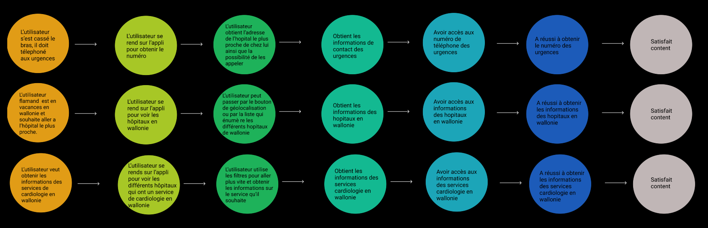

Case study
Mon évolution
Ce projet m’a fait prendre conscience de mon évolution dans le design ainsi que dans le code. j’ai remarqué plus de facilité à coder qu’au début de mon année en dwm. Avant, il me fallait des semaines et maintenant en quelque jours j’arrive à produire quelque chose de correct ce qui m’a d’ailleurs assez surprise quand j’ai rendu ma première phase 1 de mon tfa, qui était presque le résultat que je souhaitais.
Découverte
J’ai remarqué que visuellement j’osais aussi partir dans d'autre direction, tester de nouvelles choses, m'informer et découvrir de nouveaux horizons. Je me permets de sortir de ma zone de confort et ça j’adore.


L'utilité des test utilisateurs
Pour faire ce projet, j’ai effectué plusieurs tests utilisateurs ainsi que user journey. Honnêtement, je ne comprenais pas trop le but au départ de cette démarche dans mes anciens projets mais maintenant je trouve cela hyper important pour développer quelque chose car c’est grâce aux utilisateurs que j’ai pu me rendre compte de certaines de mes erreurs et améliorer mon projet. Ainsi qu'à l'aide de mes user journey de penser efficacement au développement de mon mvp.
Mieux gérer mon organisation
J’ai réussi à mieux organiser mon projet à moins partir dans tous les sens, à effectuer plus de recherche ainsi que faire des moodboards, des maquettes avant de coder mon idée ce qui est plus facile, permet un gain de temps et me permets de moins me perdre dans mon code.


La fin
Pour finir ce projet m’a fait évoluer sur plein de choses et ça c’est top. Il m'a permis aussi de m’ouvrir plus et d’avoir un autre regard sur certaines choses.
N'hésitez pas à jeter un oeil a mon dossier de production !